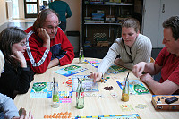

|
Foto's van verschillende spellenavonden in 2009 |
De spellenkast |
Arjo speelt Regenwormen |
Herders en schapen |
De ontembare stad |
Aerjen en Marc bij Amon Ra |
 Puerto Rico |
In gesprek over Amon Ra |
Detail van Amon Ra |
Wat staat er in de spelregels? |
Aerjen, Marc en Annelies spelen Ra |
Ra |
Ra, het speelbord |